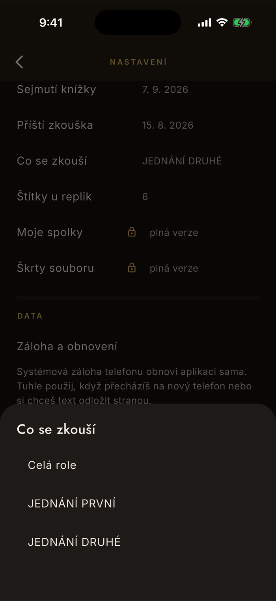
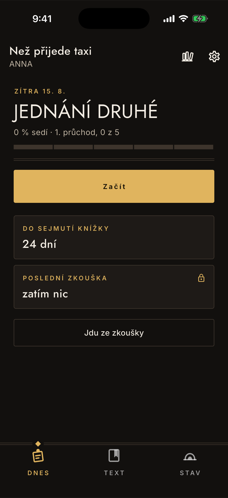

Učení
Termíny a co se zkouší
„Zítra jedeme druhé jednání." Když to appce řeknete, přestane vám nabízet celou roli a začne zkoušet přesně ten úsek. Jsou to tři řádky v nastavení, vyplní se za půl minuty a je to jediné místo, kde aplikaci říkáte, na co se máte připravit.
Nastavení · Inscenace
Tři řádky, každý na jedno ťuknutí
Ozubené kolo vpravo nahoře, oddíl Inscenace. Dokud nic nevyplníte, stojí u všech tří „nezadáno" a aplikace pracuje s celou rolí — nic se tím nekazí, jen o vaší zkoušce neví.
Sejmutí knížky
Datum, do kterého máte umět text zpaměti. Na domovské obrazovce se z něj stane odpočet dní — je to ta nejtvrdší informace, kterou o roli máte.
Příští zkouška
Kdy se jde znovu zkoušet. Ukáže se nad rozsahem jako „zítra 15. 8." — abyste při otevření aplikace věděli, na co se díváte.
Co se zkouší
Vybírá se ze seznamu, nepíše se. Aplikace nabídne Celá role a k tomu dějství, která ve vašem scénáři skutečně našla — u vzorku výše „JEDNÁNÍ PRVNÍ" a „JEDNÁNÍ DRUHÉ".

Co to změní
Dril přestane nabízet zbytek hry
Rozsah není štítek, je to filtr. Dril z něj bere repliky, domovská obrazovka podle něj počítá procento — a číslo „0 z 5" místo „0 z 12" je přesně ten rozdíl, kvůli kterému má cenu to vyplnit.
Nahoře je vidět, na co se chystáš
Datum zkoušky, pod ním název úseku. Bez vyplnění tam stojí „zatím bez zkoušky" a „Celá role".
Procento se vztahuje k úseku
Ne k celé roli. Když si tedy nastavíte druhé jednání, uvidíte, jak jste na tom s ním — a to je otázka, kterou si před zítřkem kladete.
Po zkoušce rozsah přepneš
Je to údaj o příští zkoušce, ne trvalé nastavení. Až se bude jet něco jiného, přepněte ho; postup v učení se tím nikdy nezahodí.

Na co se ptají
Proč si nemůžu vybrat výstup nebo scénu?
Protože v českých divadelních překladech obvykle nejsou. Číslované výstupy jsou konvence, kterou většina textů nemá, kdežto dějství tam bývají skoro vždycky — a „zítra jedeme druhé jednání" je i to, co režisér reálně řekne.
Nabízejí se proto jen dějství, která aplikace ve vašem scénáři skutečně našla. Když jich text nemá, zbude volba Celá role.
Proč se rozsah nedá napsat rukou?
Volný text tam původně byl a k ničemu nevedl: dril z věty „od Anny po odchod sousedky" nic vyčíst nedokáže, takže by to byla jen poznámka pro vás. Výběr ze seznamu má tu vlastnost, že se podle něj dá skutečně filtrovat.
Kde všude se rozsah projeví
V drilu a na domovské obrazovce — dril nabízí repliky z úseku a procento se počítá z něj.
Na obrazovce Stav ne, a je to schválně. Ta odpovídá na otázku „jak jsem na tom s rolí", takže počítá celou roli bez ohledu na to, co se zkouší zítra. Rozebírá to stránka o postupu.
Na nabídku replik v záznamu po zkoušce zatím taky ne — ten prochází celou roli a vybere z ní pětadvacet nejslabších. Vyplněný rozsah tam tedy výběr nezúží.
Musím to vyplňovat?
Ne. Bez vyplnění se zkouší celá role, což je rozumný výchozí stav — a u krátké role je to i správně. Smysl to dostává ve chvíli, kdy je text dlouhý a zkouší se po částech.
Zadané datum sejmutí knížky není totéž co sejmutá knížka
Datum je váš termín, odpočet do něj je připomínka. Sejmutí knížky je něco jiného: okamžik, kdy proběhne zkouška bez jediné nápovědy. Ten se nedá zadat, aplikace ho pozná z dat — popisuje to stránka o záznamu po zkoušce.
Je to zdarma?
Ano, všechny tři řádky. Placený je až sběr po zkoušce, který na ně navazuje.
Proč to aplikace neuhodne sama
Protože rozpis zkoušek nikde nemá a mít nebude — je na nástěnce, ve skupinovém chatu nebo v hlavě inspicienta. Odhadovat, co se bude zítra zkoušet, by znamenalo tipovat, a špatný tip je horší než žádný: naučíte se úsek, který na řadu nepřijde.
Tři řádky vyplněné za půl minuty jsou proto poctivější řešení než chytrost, která se plete.
Nesedí vám rozsah, nebo v seznamu chybí dějství?
contact@lukashula.cz